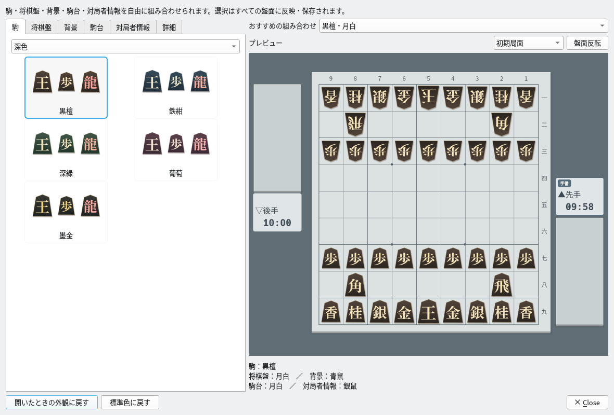
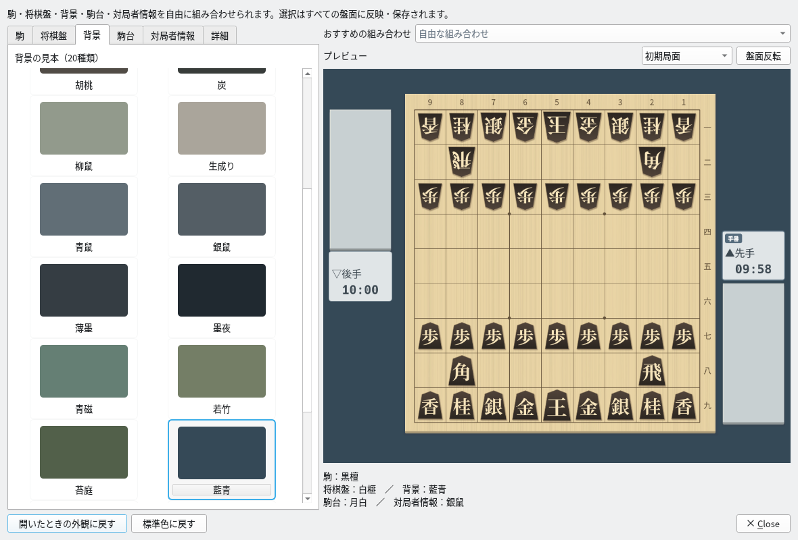
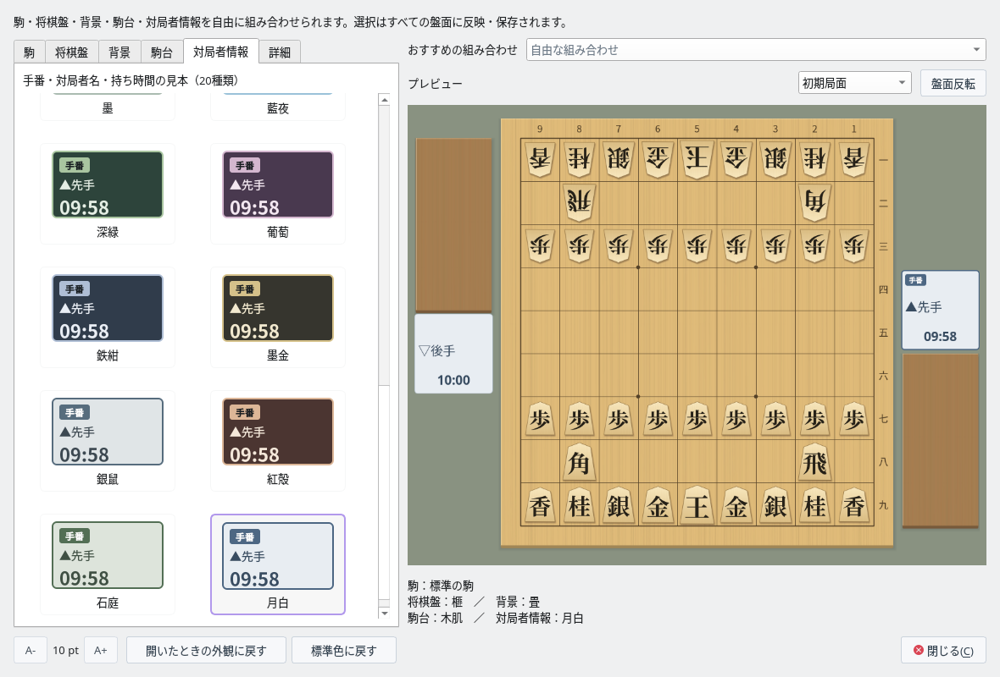
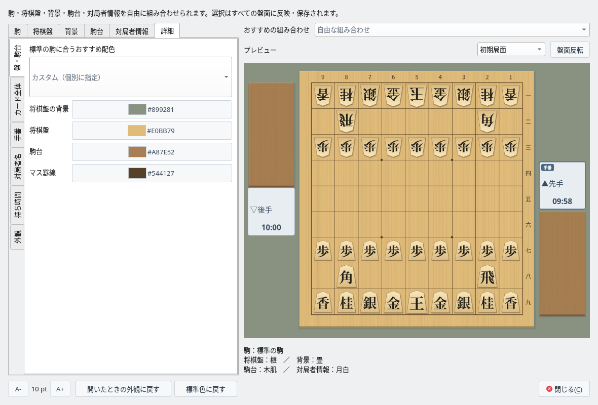

対局画面の外観
5つの部品を、見本から自由に組み合わせる
外観ウィンドウを開く
「表示」→「対局画面の外観…」を選びます。以前の「駒の種類」「盤面の配色」メニューは、このウィンドウにまとめました。
左側で見本を選び、右側のプレビューで全体の組み合わせを確認します。選択はすべての盤面へすぐに反映され、自動で保存されます。プレビューの下には、いま選んでいる5つの部品の名前が表示されます。


おすすめの組み合わせ「黒檀・月白」（駒タブを「深色」で絞り込み）
5つの部品を独立して選ぶ
| タブ | 見本 | 変わる範囲 |
|---|---|---|
| 駒 | 40種類 | 標準・虎斑・木肌・淡色・深色・戦国文字・チェス風・アルファベットの駒。種類で絞り込めます（駒の種類）。 |
| 将棋盤 | 26種類 | 盤面の色・木目、マス罫線。 |
| 背景 | 26種類 | 盤や駒台の周囲の背景色。 |
| 駒台 | 26種類 | 持駒を置く台の色と木目。 |
| 対局者情報 | 20種類 | カード、手番バッジ、対局者名、持ち時間と警告時の色。 |
各タブで選んでも、ほかの部品は変わりません。将棋盤を変えても背景色は保たれ、背景を変えても盤の色・木目・罫線は保たれます。将棋盤と駒台の木目も独立して設定できます。
| 部品 | 見本 |
|---|---|
| 将棋盤 | 榧・白榧・本榧・琥珀・胡桃・焦茶・白桐・生成り・月白・銀鼠・薄墨・墨夜・青磁・若竹・苔庭・藍青・薄桜・藤鼠・砂岩・青灰 |
| 背景 | 畳・白緑・松葉・焦茶・胡桃・炭・柳鼠・生成り・青鼠・銀鼠・薄墨・墨夜・青磁・若竹・苔庭・藍青・薄桜・藤鼠・砂岩・青灰 |
| 駒台 | 木肌・白榧・本榧・飴色・胡桃・黒檀・白桐・生成り・月白・銀鼠・薄墨・墨夜・青磁・若竹・苔庭・藍青・薄桜・藤鼠・砂岩・青灰 |
将棋盤・背景・駒台には、このほかにチェス風の駒とアルファベットの駒に合わせた「チェス・木肌」「チェス・白」「チェス・墨」「欧文・木肌」「欧文・白」「欧文・墨」の6種類があります。


将棋盤を「白榧」、背景を「藍青」に個別に変更
おすすめの組み合わせとプレビュー
「黒檀・月白」「白木・墨夜」「淡虎斑・白榧」やチェス風9セット・アルファベット9セットなど、24種類の組み合わせを出発点にできます。おすすめを選ぶと背景を含む5つの部品をまとめて変更します。その後は部品を個別に選び直せます（組み合わせの欄は「自由な組み合わせ」になります）。
プレビューは実際の対局画面と同じ描画です。「成駒・持駒の見本」と「盤面反転」で、文字や持駒の読みやすさも確認できます。プレビューの局面・反転の操作は、進行中の対局に影響しません。
手番・対局者・持ち時間の20見本
若草・生成り・白磁・桜霞・藤霞・青磁・水浅葱・砂丘・琥珀・胡桃・墨・藍夜・深緑・葡萄・鉄紺・墨金・銀鼠・紅殻・石庭・月白から選べます。明るいカードと暗いカードの両方を用意しています。


対局者情報の見本（月白を選択）
詳細調整と設定の保存
「詳細」タブでは、盤・駒台、対局者カード、手番、対局者名、持ち時間の18項目の色を1つずつ変更できます。背景や枠線の色は透明度も指定できます。「外観」では駒の大きさ（90〜112%）、駒の影、将棋盤と駒台それぞれの木目を変更できます。色を個別に変えると「カスタム（個別に指定）」と表示されます。
「開いたときの外観に戻す」は、このウィンドウを開いた時点の駒・色・質感を復元します。「標準色に戻す」は18項目の色だけを標準に戻します。
選んだ外観、ウィンドウの大きさ、最後に開いたタブ、駒の絞り込みを保存します。読み筋表示や詰将棋の盤、盤面画像の出力にも同じ設定が反映されます。


「詳細」タブの「盤・駒台」